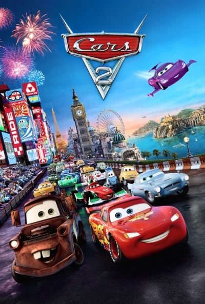
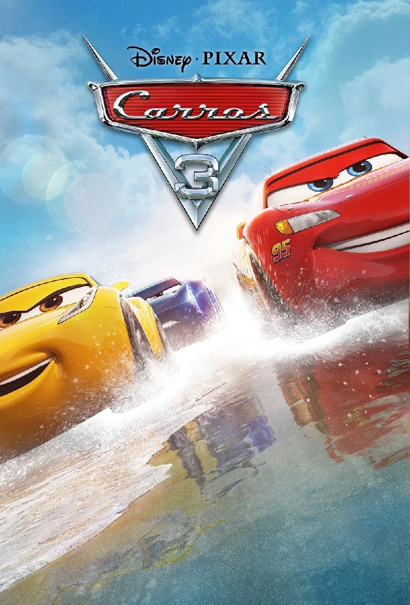
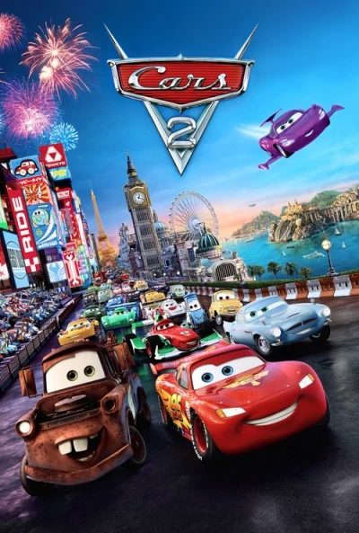
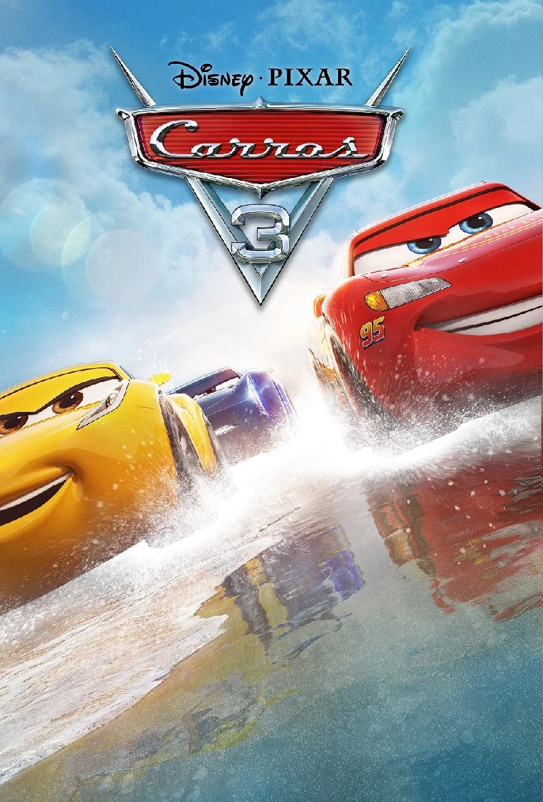

Copa Pistão
A Copa Pistão é um campeonato de séries de corridas que organizou campeonatos por décadas, em várias gerações de pilotos e campeões. A série da Copa Pistão é conhecida desde 1951, onde o Fabuloso Doc Hudson e outros competiram em trilhas de terra. Nos tempos modernos, no entanto, os pilotos competem em grandes estádios, com pistas de corrida cuidadosamente pavimentadas e um espaço imenso para espectadores.
Temporadas do McQueen
- 2006
- 2007
- 2009
- 2010
- 2011
- 2013
- 2015
- 2016

Equipe

Doc Hudson
Doc, com sua experiência de vida, ensinou a McQueen que um troféu é apenas uma taça vazia, sendo que o que realmente importa na vida são os companheiros e amigos. Hudson morreu pouco antes da quarta Copa Pistão em que McQueen vence, sendo assim o troféu ficou denominado "Hudson Hornet Piston Cup" .
Sally Carrera
Sally é uma advogada de Radiator Springs, proprietária do Motel Cozy Cone e também namorada de McQueen.

Tow Mater
Mater é um caipira que se intitula como o maior piloto de ré de todos os tempos, também melhor amigo de McQueen.
Mack
O caminhão Mack, grande parceiro de McQueen e também responsável por carregá-lo para todos os lugares.
Luigi
Luigi, fornecedor de pneus e parte da equipe de McQueen nas corridas em Radiador Springs.
Guido
Grande amigo e companheiro de Luigi e trocador oficial de pneus de Relâmpago McQueen.
Fillmore
Fillmore é hippie e gosta de rodar pouco, criador do combustível orgânico e também faz parte da equipe de McQueen em suas corrídas.
Filmes
 


